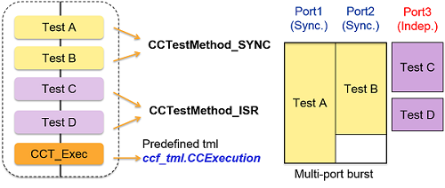
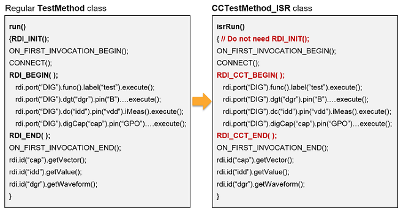
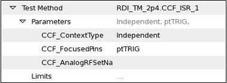

CCTestMethod_ISR
SmartRDI has a CCTestMethod_ISR class to support the independent sequencer running (ISR) in the testflow level. The class is an extension to the existing concurrent test framework (CCT) in SmarTest 7.
The CCTestMethod_ISR class is defined in the header file rdi.hpp.
The following image illustrates the CCTestMethod_ISR class workflow.

Code template
#include "rdi.hpp"
class UserClassName: public CCTestMethod_ISR {
protected:
virtual void addParameters()
{
// Add your code
}
virtual void isrRun()
{
// The code as in run() in conventional TestMethod
}
virtual void postParameterChange(const std::string& parameterIdentifier)
{
// Add your code
}
};
REGISTER_TESTMETHOD("UserClassName", UserClassName);
Migration from TestMethod to CCTestMethod_ISR
In the CCTestMethod_ISR code, you do not need to use RDI_INIT(). The RDI_CCT_BEGIN() and RDI_CCT_END() block is equal to an RDI_BEGIN() and RDI_END block.

Test suite parameters
To enable concurrent tests with multiport burst and ISR, you must specify the following test
suit parameters:
- CCF_ContextType: Specify this parameter to Independent for CCTestMethod_ISR cases.
- CCF_FocusedPins: Specify this parameter to all the ports defined in port() and isrRun().
- CCF_AnalogRFSetNa: Do not specify this parameter and leave it empty.
For example,

Hidden upload in CCTestMethod_ISR
The code example below describes how to use the hidden upload feature in CCTestMethod_ISR.isrRun()
{ // Do not need RDI_INIT();
ON_FIRST_INVOCATION_BEGIN();
rdi.hiddenUpload(TA::ALL);
RDI_CCT_BEGIN();
rdi.dgt("dgr").pin("B").sample(1024).Fs(10M).execute();
rdi.dc("idd").pin("vdd").iMeas().execute();
rdi.digCap("cap").pin("GPO").sample(1000).execute();
RDI_CCT_END();
ON_FIRST_INVOCATION_END();
SMC_ARM();
}
SMC_BackgroundProcessing()
{
rdi.id("cap").getVector();
rdi.id("idd").getValue();
rdi.id("dgr").getWaveform();
}
Functional changes
- Introduced in SmartRDI 2.4.0